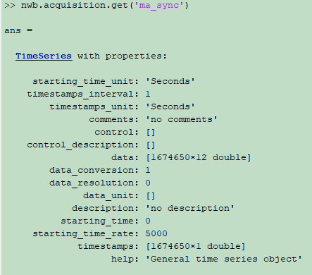

Motion Analysis System¶
Structure of Motion Analysis System¶
Files are required for storing MA data into NWB Structure¶
File |
Description |
|
|---|---|---|
|
Analog data for synchronization in text Can be read with function importdata() in matlab |
|
_cleaned.trc |
Cleaned MA data in text Can be read with function importdata() in matlab |
|
Files are not used for storing MA data into NWB Structure¶
File |
Description |
|---|---|
.anb |
Analog data for synchronization in binary |
.cap |
Configuration/Description file during recording (text) |
_cleaned.trb |
Cleaned MA data in binary |
_cleaned.cap |
Configuration/Description file during recording and cleaning (text) |
NWB Structure Storing Motion Analysis Data¶
Cleaned MA marker data in _cleaned.trc file¶
Cleaned MA marker data are stored as a TimeSeries structure under the key ‘ma_marker’ in the structure of nwb.acquisition.

Notes:
- ma_marker.timestamps:
Timestamps for samples stored in data
- ma_marker.data:
x, y, z positions of all recorded joints at all timestamps
MA Synchronization data in .anc file¶
MA Synchronization data are stored as a TimeSeries structure under the key ‘ma_sync’ in the structure of nwb.acquisition.
Notes:
- ma_sync.timestamps:
Timestamps for samples stored in data
- ma_sync.data:
MA synchronization data at all timestamps, there are total 12 channels for synchronization, should identify while channel is used. Now data of all the 12 channels are stored into NWB structure.